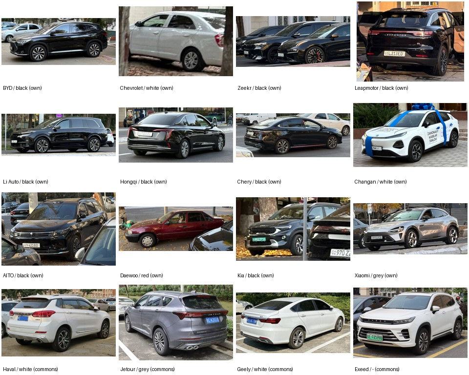
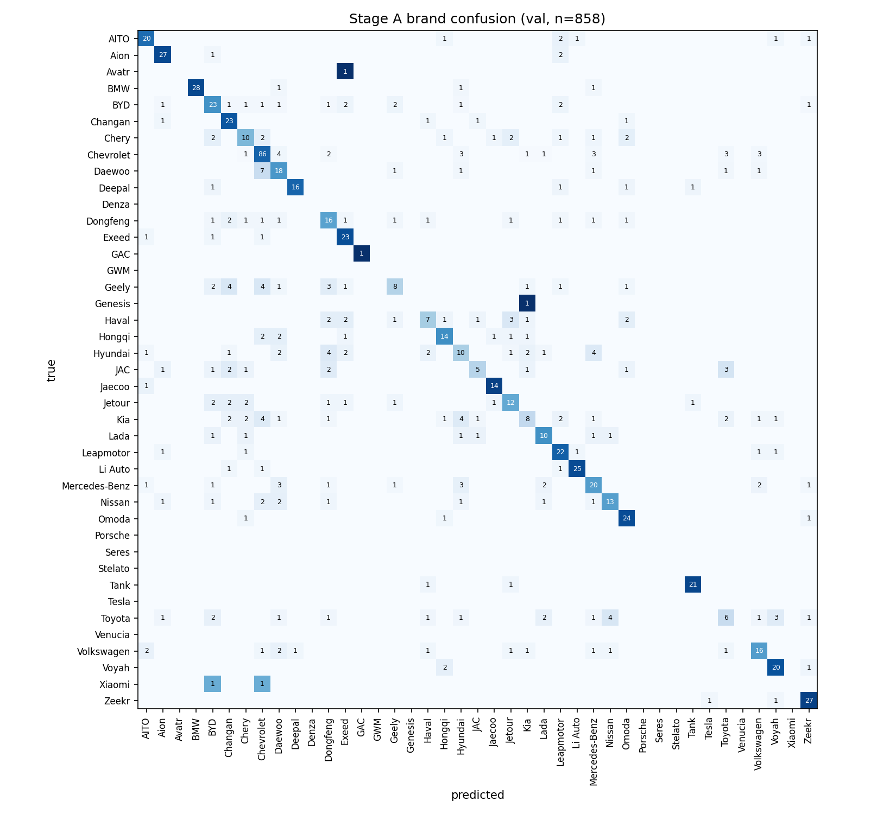

CSAI-3210 Introduction to AI — Midterm report, Fall 2026, Webster University in Tashkent
Repository: https://github.com/FirdavsJurakulov/CSAI_midterm (final commit tagged midterm)
The repository contains all code (crop extraction, Commons crawler, label merge, training of both models, evaluation, inference), the label file, all crops and masks, and all weights.
Brands. 41 brand labels: the 24 brands named in the brief, plus Chevrolet's local predecessor Daewoo, Lada, and the Chinese brands we actually met in the streets and car parks (Aion, Deepal, AITO, Voyah, Dongfeng, Tank, Xiaomi, GAC, Denza, Seres, Stelato, Avatr, Venucia, GWM) and a few others (Porsche, Tesla, Genesis). Brand = the badge, named in English (Lixiang → Li Auto). 30 brands have 76–439 cars each; the last 11 have only 1–6 cars (own photos only) and are effectively unseen by the model.
Sources. (1) Own photos: 192 phone photos of Tashkent streets and car parks taken by the team on 26–27 Oct (day and evening, all angles),
433 labelled cars. The second session targeted new residential complexes and dealer streets to find Chinese brands.
(2) Wikimedia Commons (CC BY / CC BY-SA, public domain): 4,893 cars downloaded with our crawler scripts/fetch_commons.py via the public MediaWiki API,
one car per photo; author, licence and URL of every file are kept in data/external/*/metadata.csv. We used Commons rather than Stanford Cars / CompCars
because those sets contain almost none of the 2022–2026 Chinese models that dominate Tashkent today.
Labelling. Each photo goes through the detector (scripts/extract_crops.py), which saves one crop + mask per car. Own crops were labelled by hand
(brand from the badge; colour as a person would name it in daylight); crops with an unreadable badge were shown as a contact sheet and labelled by the team
(48 ambiguous cars on 27 Oct), unidentifiable / tiny / blurry cars were left out, as were crops showing faces. Commons crops take the brand from the
Commons category; colour from the file's colour category when present (2,351 Commons crops have no colour label and are used for brand only).
Noisy Commons files (interiors, logos, old joint-venture models, trucks) are removed by filename rules and by detector class/confidence.
Labels: data/labels.csv, one line per car.
Split. Grouped, leakage-free: own photos are split by source photo (30% of photos to validation, so two crops of one photo never sit on both sides); Commons by file (15%). Result: 4,468 train / 858 validation crops (123 own). Final test-day models are retrained on train + validation.
| Brand | Own | Commons | Total |
|---|---|---|---|
| Chevrolet | 245 | 194 | 439 |
| BYD | 53 | 167 | 220 |
| BMW | 5 | 196 | 201 |
| Kia | 14 | 187 | 201 |
| Changan | 9 | 188 | 197 |
| Volkswagen | 2 | 190 | 192 |
| Zeekr | 8 | 184 | 192 |
| Hyundai | 2 | 188 | 190 |
| Leapmotor | 11 | 178 | 189 |
| Li Auto | 7 | 181 | 188 |
| Aion | 1 | 184 | 185 |
| Brand | Own | Commons | Total |
|---|---|---|---|
| Dongfeng | 3 | 182 | 185 |
| Nissan | 1 | 183 | 184 |
| Mercedes-Benz | 0 | 183 | 183 |
| Exeed | 0 | 183 | 183 |
| Geely | 0 | 182 | 182 |
| Daewoo | 15 | 165 | 180 |
| Toyota | 0 | 178 | 178 |
| Hongqi | 6 | 164 | 170 |
| Jetour | 1 | 166 | 167 |
| Voyah | 3 | 163 | 166 |
| AITO | 6 | 159 | 165 |
| Brand | Own | Commons | Total |
|---|---|---|---|
| Haval | 0 | 163 | 163 |
| Deepal | 4 | 141 | 145 |
| Chery | 6 | 121 | 127 |
| Lada | 3 | 120 | 123 |
| JAC | 0 | 123 | 123 |
| Omoda | 0 | 117 | 117 |
| Tank | 0 | 87 | 87 |
| Jaecoo | 0 | 76 | 76 |
| Own only: Xiaomi 6, Porsche 5, GAC 4, Tesla, Stelato, Denza, GWM, Seres 2 each, Avatr, Genesis, Venucia 1 each | |||
| Total | 433 | 4,893 | 5,326 |
| Colour | Own | Commons | Total |
|---|---|---|---|
| white | 192 | 910 | 1,102 |
| grey/silver | 68 | 503 | 571 |
| black | 147 | 386 | 533 |
| blue | 6 | 334 | 340 |
| red | 7 | 182 | 189 |
| brown/beige | 7 | 78 | 85 |
| yellow/orange | 0 | 85 | 85 |
| green | 6 | 64 | 70 |
| no label | 0 | 2,351 | 2,351 |

Multi-car strategy: detector + per-car classifier. Scoring is per car and every extra prediction costs a point, so we need exactly one prediction per
car and explicit control over which cars are reported. A COCO-pretrained YOLO11s-seg (used as-is, not a car-brand model) finds the cars; small or
low-confidence detections are dropped (thresholds in configs/default.yaml).
Brand: DINOv2 ViT-S/14 (self-supervised ViT, 21.6 M parameters), trained by us in two stages. Crops are letterboxed (padded, not centre-cropped, because cars are wide) to 224 px. Embedding = CLS token concatenated with the mean of the patch tokens (768-d), the standard DINOv2 linear-probe recipe. Stage A: backbone frozen, features cached once (original + mirrored), only the MLP head is trained (0.83 M parameters, 13 s). Stage B: the last 4 of 12 transformer blocks + final norm are fine-tuned together with the head (7.9 M trainable parameters) on augmented images; the frozen first 8 blocks run without gradients so this fits a 4 GB GPU. Stage B replaces stage A only if it is better on validation.
Colour: our own non-neural model. DINOv2 is trained with colour-jitter augmentation, so its features are partly colour-blind; a separate model on explicit colour statistics is more reliable and easy to explain. Only pixels inside the (eroded) YOLO mask are used, so road, sky and other cars do not leak in. Windows, tyres and shadows are dark in every car, so features are computed twice — on the whole mask and on its lower-middle band (doors, mostly paint): saturation-weighted hue histogram of coloured pixels (18 bins), saturation and value histograms (8+8), colourful-pixel fraction, Lab mean/std/percentiles. A HistGradientBoosting classifier (class-balanced, own photos weighted ×3) maps the 100 features to the 8 colours.
Size and speed. YOLO11s-seg 10.1 M + DINOv2 21.6 M + head 0.8 M parameters; colour model ≈ 10 MB of trees. About 1 s per photo on a GTX 1650 laptop GPU, a few seconds on CPU, fully offline (all weights in the repository).
Why this design. DINOv2 features are strong for fine-grained, few-shot recognition, which suits ~100–200 cars per brand; ViT-S fits our 4 GB GPU. Stage A gives a working baseline in seconds; stage B is the improvement that has to beat it. We also compared heads on the same frozen features (table below): the MLP clearly beats logistic regression, kNN and gradient boosting (XGBoost, CatBoost, LightGBM). Trees split on one feature at a time, which suits hand-made tabular features (we do use them for colour) but not dense 768-d embeddings in which the information is spread over many dimensions.
| Head on frozen DINOv2 features (26 Oct split, 788 val crops) | Val acc. | Own photos | Macro-F1 | Train time |
|---|---|---|---|---|
| MLP head (ours) | 0.666 | 0.774 | 0.651 | 11 s |
| LightGBM | 0.543 | 0.736 | 0.531 | 282 s |
| XGBoost | 0.524 | 0.717 | 0.508 | 211 s |
| CatBoost | 0.520 | 0.774 | 0.507 | 297 s |
| Logistic regression | 0.494 | 0.717 | 0.478 | 2 s |
| kNN (k = 10, cosine) | 0.473 | 0.717 | 0.461 | 0 s |
| Validation (858 crops, 123 own) | All | Own Tashkent photos | Commons |
|---|---|---|---|
| Brand, stage A (frozen + MLP) | 0.668 | 0.748 | 0.654 |
| Brand, stage B (fine-tuned last 4 blocks) | [ ] | [ ] | [ ] |
| Colour (504 colour-labelled crops) | 0.780 | 0.732 | 0.795 |
Colour per class (F1): red 0.92, green 0.89, white 0.88, black 0.80, yellow 0.72, blue 0.66, grey 0.60, brown 0.30. Grey/silver is confused with white (bright reflections) and with black (shadows, evening photos); brown/beige is rare (85 cars) and sits between grey, white and yellow.

Best brands (F1 ≥ 0.85): BMW, Tank, Zeekr, Deepal, Li Auto, Jaecoo — each has a very distinctive front (kidney grille, boxy Tank body, Zeekr light bar, Li Auto's full-width lamp). Classic pairs are confused as expected: Daewoo ↔ Chevrolet (the same Nexia/Matiz/Gentra bodies with a different badge — the badge is a few pixels at 224 px), Kia ↔ Hyundai (shared platforms), Mercedes ↔ Daewoo/Chevrolet in old Commons photos. On own photos the largest error is Daewoo → Chevrolet. Toyota, Hyundai and Kia (F1 ≈ 0.40) suffer from very different model generations under one badge.
Chinese brands. Half of the test is Chinese brands, and they are the hardest part. (1) Group families look alike: Chery, Jetour, Exeed, Omoda and Jaecoo are all Chery Group; Haval and Tank are Great Wall; Changan, Deepal and Avatr are Changan; Dongfeng and Voyah; Geely and Zeekr. Shared platforms, lamps and proportions make Haval → Jetour, Geely → Dongfeng and Chery → Jetour/Exeed our most frequent Chinese confusions; Haval (0.38), Geely (0.40), Chery (0.43) and JAC (0.29) are our weakest brands. (2) Generic modern SUV design: from the side or rear, many 2023–2025 crossovers differ mainly in the badge and lamp signature. (3) Data: most Chinese-brand examples come from Commons (photographed in China, often older facelifts), while our own photos contain only 1–11 cars for most Chinese brands and none for Geely, Haval, JAC, Exeed, Omoda, Jaecoo, Tank. Our second photo session (27 Oct) targeted this gap and added the first local examples of Zeekr, Leapmotor, Li Auto, AITO, Hongqi, Chery and Xiaomi. (4) Brands seen only 1–6 times (Xiaomi, GAC, Denza, Stelato, Avatr…) cannot be learnt yet; on test day they will receive a wrong brand but can still earn the colour share. Stage B targets (1)–(2): fine-tuning lets the backbone attend to badges, grilles and lamp shapes instead of generic body shape.
Own phone-camera tests. [fill in after the rehearsal: N photos of cars shown on a screen, photographed with the phone, transferred and predicted; time per photo; how many cars right for brand / colour; extra predictions]. On four of our street photos the full pipeline took 0.5–1.8 s per photo.
git clone https://github.com/FirdavsJurakulov/CSAI_midterm.git && cd CSAI_midterm python -m venv .venv && .venv\Scripts\activate && pip install -r requirements.txt (done before class) python -m carbrand.predict incoming/photo.jpg
incoming/.photo.jpg: BYD white; Chevrolet grey (cars left to right) in about 1–2 s and saves an annotated copy in runs/predict/.weights/.With two more weeks we would (1) photograph a few hundred more cars per Chinese brand in Tashkent, especially Haval, Geely, Chery, Jetour, Exeed, Omoda/Jaecoo and JAC, for which we have no or almost no own photos, and the newer brands (Xiaomi, GAC, Denza, Avatr); (2) fine-tune at 336 px or train a second-stage classifier on a zoomed badge/grille region so the badge becomes readable; (3) tune the detector thresholds on a set of real multi-car test-style photos taken off a screen; (4) label colour for the Commons crops that have none and collect more beige/brown and grey cars.
AI use. We used Claude Code (Anthropic) as a coding assistant throughout the project: to propose and discuss the architecture, write and debug the Python code (crop extraction, Wikimedia Commons crawler, training, colour model, inference script), suggest first-pass labels for our own crops (every label was checked and the 48 ambiguous cars were labelled by us), run the training, and draft this report, which we then edited. All design decisions, data collection, final labels and the results were reviewed by us, and we can explain every part of the pipeline. No AI tools are used during the live test. [edit if you used other tools]
Data credit: Wikimedia Commons contributors (individual authors and licences listed per file in data/external/*/metadata.csv).
Pretrained weights: DINOv2 (Oquab et al., 2023, Meta AI; via timm), YOLO11 (Ultralytics, COCO).